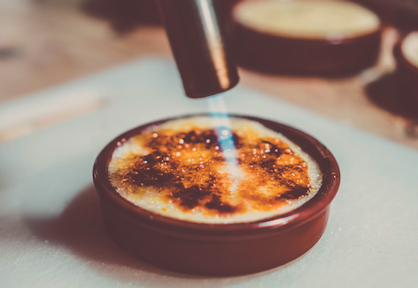

Maple de Crème Brûlée

Maple de Crème Brûlée
This is an exquisite, simple and highly impressive dish.
If you have not made this before, you must give it a crack and share with someone you love.
Ingredients
- 500ml double cream.
- 100ml of the best quality full cream milk you can find.
- 1 tea spoon of organic vanilla bean (If you can, get a real vanilla pod and scoop the inside out).
- 5 large egg yolks.
- 50ml granulated sugar.
- Maple syrup (the best quality you can find, must be organic).
Cooking instructions
- Heat oven to 180°C
- Sit two deep ramekins in a deep roasting tin, at least 10cm deep.
- Slowly pour cream into a small to medium pan and with the milk.
- Slice the vanilla pod in half lengthsways, use the knife to scrape out the vanilla bean seeds into cream/milk mixture and incude the vanilla pod as well.
- Place egg yolks and sugar into mixing bowk and whisk for 1 minute with an electric mixer - until it has a thicker and fluffy form.
- Bring cream/milk mix to a boil on a medium heat - as soon as bubbles appear around the edge of the pot, take it off the heat.
- Pour hot cream mix into the egg mix and stir with wire whisk and ensure you scrape out the seeds from the pan.
- Pour hot mixture through a fine sieve thats sitting on top of a bowl / jug ect. Use a spoon to massage any vanilla seeds through mesh.
- Scoop all the pale foam sitting at the top of the mix, should be a few spoonfuls - dischard and stir the mix.
- Pour hot water in roasting tin. Enough that ramekins are submerged 1.5cm into water.
- Pour hot cream mix into ramekins - fill just below the top.
- Pop them into the oven with baking paper sheet over the top of the tin - loosely to allow airflow through.
- Bake for 30-35 mins, until mixture is set (should be like jelly) should wobble a bit, don't over bake and make them too firm.
- Take ramekins out of the roasting tin - use gloves and set them on a wire rack to cool for 4 mins, then transfer to the fridge.
- Take ramekins out of the fridge and sprinkle 1 and a half tsp of caster sugar on top.
- Use a little maple syrup to slightly dampen the sugar, then use a blow torch to caramelise it (best to keep the torch moving in small circles just above the sugar and maple syrup).
- Serve them up and eat within an hour.